arXiv 2511.04665 · cs.RO · v2 2025 年 11 月 10 日 · 中文精读
Real-to-Sim Robot Policy Evaluation with Gaussian Splatting Simulation of Soft-Body Interactions
作者 Kaifeng Zhang*、Shuo Sha*、Hanxiao Jiang、Matthew Loper、Hyunjong Song、Guangyan Cai、Zhuo Xu、Xiaochen Hu、Changxi Zheng、Yunzhu Li，来自哥伦比亚大学、SceniX Inc. 和 Google DeepMind（* 共同一作，部分工作在 SceniX 实习期间完成）。
关于这份精读。这篇论文在 arXiv 上以 CC BY 4.0 发布。我查了 PDF 每一页的页脚，除 arXiv 的版本戳外没有别的版权声明，和登记的许可不矛盾。本页按原文顺序覆盖正文五节和附录 I、II，小节编号和原文一致，用自己的话整理，不是逐字翻译。公式按原文编号，表格数字照录原文 v2。
图 1 到图 11 从 arXiv v2 PDF 裁切，作者 Kaifeng Zhang 等，CC BY 4.0；只做了裁切、缩放和格式转换，没有改内容。图下的文字是我写的。本页的“读者注”是整理时核算或对照发现的，不属于论文内容，页尾有汇总。
版本。v1 是 2025-11-06，v2 是 2025-11-10。用户提供的 PDF 和 arXiv 上的 v2 逐字节相同。两版的差别见 读者注 19，最大的一处是表 I、图 9、图 10 的 MMRV 全部换了数。
代码。官方代码 kywind/real2sim-eval，MIT 许可。我读的是提交 8bd7091（2025-11-10，和 v2 同一天），只读，没有运行。策略训练是子模块 shuosha/policy_training（提交 32abb1a，2025-11-08，MIT）。仓库里的 third-party/diff-gaussian-rasterization-w-depth 是 Inria 的非商业许可，本页不引它的代码。代码是 MIT，所以下面个别地方引了几行配置值；引用都注明了文件。
在真机上评测操作策略又慢又贵，还难以复现，涉及软体物体时更麻烦。仿真本来是规模化的替代品，但现有仿真器很难同时把软体交互的外观和物理做像。这篇论文搭了一个评测用的仿真器：外观用 3D 高斯泼溅（3DGS）从手机扫描重建，动力学用 PhysTwin 从人手摆弄物体的视频里辨识出弹簧-质点数字孪生。然后在三个任务上比较同一批策略在仿真和真机上的成功率。
读完我认为最值得记住的三点。第一，论文没有逐策略的成功率表，但图 3 是矢量图，可以精确读出每个点；用读出的点算 r，七个 r 全部和论文一致（读者注 6）。第二，同样的点算 MMRV，v2 的数只有在把 SIMPLER 官方函数的两个参数交换之后才对得上，也就是用仿真成功率的差而不是真机成功率的差给错排加权；按 SIMPLER 原定义，IsaacLab 在绳子任务上的 MMRV 是 0.480，是我能复算的五格里最差的（本文同一格 0.154），而不是论文说的“偏低”（读者注 7、8）。第三，每个检查点只评测 16 到 27 次，单点的 95% 置信区间宽约 ±0.2，所以靠的是“很多检查点一起看”的相关性，单个检查点的仿真成功率不能当真机成绩用（读者注 5、20）。
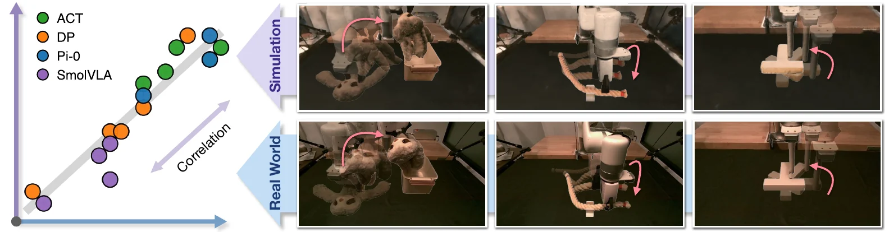
站内已经有 SIMPLER 的精读。这两篇问的是同一个问题：一个仿真器给出的策略成绩，能不能代替真机成绩来比较策略。本文 §IV-A 明说“按 [20] 用 MMRV 和 Pearson r 衡量”，[20] 就是 SIMPLER。下表是我从两篇原文各自读出来的对比。
| SIMPLER（arXiv 2405.05941） | 本文 | |
|---|---|---|
| 被评测的策略 | 公开的通用策略：RT-1 各阶段、RT-1-X、RT-2-X、Octo | 作者自己只用真机数据训练的 ACT、DP、π0、SmolVLA，各取 3 到 6 个检查点 |
| 每个任务的数据点 | Google Robot 6 个策略，WidowX 3 个 | 15 到 20 个检查点（读者注 6） |
| 任务 | 刚体：拿可乐罐、移到旁边、开关抽屉、放胡萝卜等 | 软体为主：装毛绒玩具、绳子穿卡扣，外加刚体推 T |
| 视觉对齐 | “绿幕”：把真实背景照片垫在仿真物体后面，再做纹理匹配；只适用于固定相机 | 3DGS 扫描重建整个场景，再做位置和颜色对齐；任意视角都能渲染，所以支持腕部相机 |
| 动力学对齐 | 辨识机器人控制器的关节刚度和阻尼（SAPIEN） | 机器人用和真机相同的关节速度控制；物体用 PhysTwin 从视频辨识的逐弹簧刚度 |
| 相关性指标 | 定义 MMRV（按真机成绩差加权错排）和 Pearson r | 说沿用 MMRV 和 r；r 相同，MMRV 的实现把仿真和真机互换了（读者注 7） |
| 评测次数 | 真机每个策略每个任务 24 到 75 次（见 SIMPLER 页的任务设置表） | 每个检查点 16 到 27 次，报告 Clopper–Pearson 区间和 Beta 后验 |
| 基线仿真器 | 比较视觉匹配和变体汇总、SAPIEN 和 Isaac Sim | IsaacLab（PhysX），绳子用关节链近似，玩具做不出来 |
SIMPLER 在结论里自己列了两个局限：只做了刚体任务；绿幕只适用于固定相机，还原不了阴影这类细节（见 SIMPLER 页 §VII）。本文正好针对这两点：用 PhysTwin 处理软体，用 3DGS 支持移动的腕部相机。代价是每个场景要实地扫描、每个软体物体要拍一段交互视频训练孪生，而 SIMPLER 可以复用现成资产，只为背景拍照片。
PhysTwin。本文的软体动力学完全建在 PhysTwin（Jiang 等，ICCV 2025，2503.17973）上，第三作者 Hanxiao Jiang 就是 PhysTwin 的一作，第一作者 Kaifeng Zhang 也是 PhysTwin 的作者。站内没有 PhysTwin 页，这里只讲本文用到的部分（我读的是用户本地的 PhysTwin PDF）：
站内另外两篇。3D World Simulator 也是“从真实场景重建、能交互的 3D 世界”，但用粒子-体素混合动力学和学习的模型；本文的物理是显式的弹簧-质点。GAUGE 拿真实测量当基准，直接比较仿真轨迹和视频世界模型的物理保真度；本文不直接量物理误差（附录 II-B 的回放实验除外），量的是“策略成绩排得对不对”。三篇可以对照着看：GAUGE 问“物理像不像”，本文和 SIMPLER 问“像到能拿来比较策略了没有”。
操作策略进步很快，但评测仍主要靠真机试验，慢、贵、难复现。社区转向训练机器人基础模型以后，需要快速迭代和大规模对比，这个瓶颈更明显了。仿真早已大量用于生成数据和训练，却很少用于评测，主要原因是仿真和真机的成绩相关性差：仿真里好的策略，到真机上不一定好。核心问题是：仿真器要做到多真，才能放心地拿来评测策略？
作者认为有两个关键因素：外观和动力学。外观上，渲染要和真实观测接近；对用腕部相机的策略尤其难，SIMPLER 那种绿幕合成不够用。作者用 3DGS 从一次扫描重建照片级场景，任意视角都能渲染，并在已有的 3DGS 仿真工作之上加了自动的位置对齐、颜色对齐和物体形变处理。动力学上，传统仿真器靠调少数几个参数，对自由度很多的软体不够，作者采用 PhysTwin，从交互视频直接优化稠密的弹簧-质点系统。
两部分合成一个仿真器，用 Gym 风格的接口暴露出来。在装毛绒玩具、绳子穿卡扣、推 T 形块上，用 ACT、DP、SmolVLA、π0 比较仿真和真机成功率，并做消融。贡献三点：
大多数系统直接在真机上评测，成本高，而且绑定特定任务、本体和传感器。为了系统地比较，有人做了真机基准（标准化硬件）或仿真基准（资产和任务集）。真机基准保真但不灵活、难扩展；仿真基准常常动力学和渲染不真实，这就是所谓的 sim-to-real gap。和本文最相关的几个：SIMPLER 和 RobotArena ∞ 靠绿幕合成，Ctrl-World 靠 2D 视频世界模型，Real-is-sim 只做刚体。本文用高斯泼溅渲染加从交互视频得到的软体孪生，不依赖固定相机。（RobotArena ∞ 和 Ctrl-World 是 v2 新加的。）
很多数字孪生框架用预先指定的物理参数，难以抓住真实的复杂动力学，也用不上人和物体交互的数据。刚体孪生研究得比较充分；软体要做全阶参数辨识仍然困难。基于学习的动力学模型（图网络、粒子-网格神经动力学等）往往牺牲物理一致性，而在接触丰富的场景里评测策略恰恰需要这一点。从视频优化物理参数的方法更有希望，其中 PhysTwin 从人-物交互视频重建稠密弹簧-质点系统，真实感和效率都最好。本文在 PhysTwin 上接一个高斯泼溅仿真器。
3DGS 能从任意视角实时渲染照片级画面。机器人领域已经用它改善视觉策略的 sim-to-real 迁移、扩充训练数据、做 real-to-sim 评测（如 Real-is-sim、GSWorld）。本文的扩展是：支持软体交互，接入 PhysTwin，加上自动的位置和颜色对齐，得到一个可以直接拿来评测的仿真器。
研究的问题是：仿真器能否可靠地预测用真机数据训练的视觉运动策略在真机上的表现？常见流程是把多个策略在一组受控的初始状态上分别在仿真和真机里跑，用标量分数 \(u\in[0,1]\) 衡量（通常是成功率）。目标是让成对的分数 \(\{(u_{i,\mathrm{sim}},u_{i,\mathrm{real}})\}_{i=1}^{N}\) 强相关，\(N\) 是被评测的策略数。
要做到这一点，一个办法是让仿真本身的结果和真实世界一致。记状态、观测、动作序列为 \(\{(s_t,o_t,a_t)\}_{t=1}^{T}\)。评测用的仿真器有两个核心部分：动力学模型 \(s_{t+1}=f(s_t,a_t)\) 和外观模型 \(o_t=g(s_t)\)（按策略需要的模态渲染，比如 RGB 图像）。保真度相应地分两轴：动力学准不准，渲染真不真。本文同时缩小这两种差距：用物理约束的重建得到软体孪生，用高分辨率高斯泼溅当渲染引擎。整体框架见图 2。
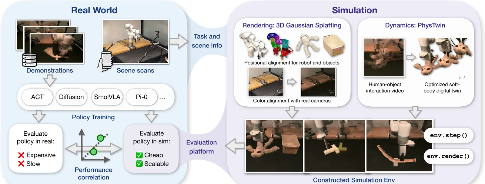
本文采用 PhysTwin 框架，用稠密弹簧-质点系统从视频重建并模拟软体和刚体。每个物体是一组质点，距离阈值 \(d\) 以内的每对点之间连一根弹簧，节点位置按牛顿动力学演化。
为了覆盖刚度、摩擦等材料性质各不相同的真实物体，PhysTwin 用一个 real-to-sim 流程联合优化一组物理参数，包括弹簧阈值 \(d\) 和每根弹簧的刚度系数 \(Y\)。优化只用一段人手和物体交互的视频：跟踪人手关键点，作为运动学控制点接到弹簧-质点系统上，调参数使视频里跟踪到的物体运动和模拟的运动尽量一致。刚体则把 \(Y\) 固定成很大的值来抑制形变。本文对和机器人交互的三个物体（毛绒玩具、绳子、T 形块）都用这个流程做系统辨识。更细的说明见上面“和 PhysTwin 的关系”。
这一节讲仿真器怎么搭。两个互补的目标：用 GS 场景重建、位置对齐、颜色对齐缩小视觉差距；用物理建模和形变处理缩小动力学差距。
1) GS 构建。用 iPhone 应用 Scaniverse 录视频，自动生成 GS 重建。桌面操作场景先扫一遍静态的机器人工作区（机器人、桌子、背景），再逐个扫实验物体。重建结果在交互式查看器 SuperSplat 里手动切成机器人、物体、背景。每个任务只需要做一次。
2) 位置对齐。拿到静态背景、机器人、PhysTwin 物体和其他静态物体的 GS 以后，把它们对齐到参考系：机器人基座系和各物体的规范系。PhysTwin 物体和静态网格各自用一个相对 6 自由度变换对齐到对应的 PhysTwin 粒子集和物体 3D 模型。机器人则自动计算 GS 和真值机器人点云（由 URDF 生成）之间的变换，用 ICP 加 RANSAC，每个连杆取 2,000 个点保证覆盖。（ICP 是什么、为什么要先用 RANSAC，见读者问答 2。）背景 GS 和机器人 GS 在同一坐标系里，所以直接套用同一个变换。
为了让静态扫描出的机器人 GS 能动起来，要把每个高斯核分到一个连杆上：ICP 对齐后，对每个核在采样的机器人点云里找最近邻，继承那个点的连杆编号。所有连杆包括夹爪手指都这样处理，所以手臂连续运动和夹爪开合都能渲染。有 URDF 的其他机器人也能照做。
3) 颜色对齐。GS 渲染的视觉差距有一大来源：重建场景和策略训练数据不在同一个色彩空间。GS 继承了 iPhone 视频的颜色特性，而策略是在机器人相机（比如 Intel RealSense，已知有色偏）的色彩空间里训练的。作者设计一个颜色变换，把 GS 颜色对到真实相机。
直接在 RGB 空间做：先在固定真实相机的视角用原始高斯颜色和不透明度渲染，再在同样视角拍真实图像，组成配对数据，求一个变换 \(f\) 让逐像素颜色差最小：
\(I_{\mathrm{GS}}\)、\(I_{\mathrm{RS}}\) 是 GS 渲染和真实相机图像，\(N\) 是像素数，\(p_i\)、\(q_i\) 是对应像素的 RGB。函数空间取 \(d\) 次多项式：
这就成了标准的最小二乘回归，用迭代重加权最小二乘（IRLS）求解，对离群点更稳。经验上二次（\(d=2\)）在表达力和过拟合之间最平衡。
按式 (2)(3) 的字面读，\(f_i\in\mathbb R^3\) 是向量，\(p_i^k\) 逐通道取幂，那么输出的 R 只依赖输入的 R，三个通道各自一条二次曲线，\(d=2\) 时一共 \(3\times3=9\) 个参数。另外式 (2) 的下标从 1 到 \(d\)，式 (3) 却用到了 \(f_0\)。
代码 assets/scans/color_alignment.py 的 _get_aug 把每个像素扩成 \([r^2,g^2,b^2,r,g,b,1]\)，解出一个 \(3\times6\) 矩阵 \(A\) 和偏置 \(b\)：\(f(p)=A\,[p^{2};p]+b\)，每个输出通道都混合了三个输入通道，共 \(18+3=21\) 个参数。配置文件里的 color_A 也确实是 18 个数（比如 cfg/gs/sloth.yaml）。所以实际用的是带通道交叉的二次变换，比式子写的更强。附录说的其余细节代码都对得上：Tukey 双权重（c = 4.685，MAD 乘 1.4826）、像素按 RGB 范数加权、最多 50 次迭代、5 张 848×480 图。
4) 物理和形变。渲染差距靠重建和对齐缓解以后，物理模型要准确反映真实动力学。作者用基于 NVIDIA Warp 的自研物理引擎，扩展 PhysTwin 的弹簧-质点模拟器，支持和机器人末端、环境物体的碰撞。抓软体孪生时，不采用常见但不真实的做法（把物体节点固定到夹爪上），而是只靠手指和物体之间的摩擦接触。夹爪合拢时，碰撞力总和到达指定阈值就自动停下，抓取更真实也更稳。
sim/physics/phystwin.py 的 step（约第 380 到 410 行）：取左右手指网格上三个固定面片（编号 1、18、19）的碰撞力相加，得到每根手指一个力向量，再取范数。只有两根手指都超过 grasp_force_threshold（cfg/physics/default.yaml 里是 3e4）时才锁住开度，标记为已抓住；两根手指都低于 100 时解除。已抓住时策略再要求合拢，开度每步最多再收 0.05。论文没提这些细节，也没给阈值的物理单位。
每个模拟步结束后，把机器人和环境的新状态传给高斯核。刚体（包括物体和机器人连杆）的核位置和朝向用对应的刚体变换更新；软体按 PhysTwin 的做法，用线性混合蒙皮（LBS）根据底层软体形变变换每个核。
PhysTwin 补充材料的 LBS 有三步：每个节点 \(k\) 用邻居的位移解一个最小二乘旋转 \(R_k\)（式 5）；每个高斯中心 \(\mu_j\) 取 K 个最近节点，按距离倒数的权重 \(w_{jk}\) 混合 \(R_k(\mu_j-\hat\mu_k)+\hat\mu_k+T_k\)（式 6、8）；高斯的四元数也按权重混合旋转（式 7）。
本文代码 sim/renderer/gs_renderer.py 的 update_rendervar 调 interpolate_motions 时传的是 quat=None，函数只返回新的中心，高斯的旋转原样保留后归一化。邻居数是 8（求节点旋转）和 16（混合高斯），权重是距离倒数归一化，precompute_relations: True 时只在第一步算一次。PhysTwin 用各向同性高斯，朝向无所谓；本文物体的高斯来自 Scaniverse 扫描，我推断大多是各向异性的，大形变时可能看出“椭球没跟着转”。这是我的推断，没有运行代码验证。
GS 渲染、物理求解和 LBS 是主要的计算开销。单 GPU 上 5 到 30 FPS，取决于机器人和物体的接触状态。加上不需要真实环境的复位，再用多 GPU 并行，经验上评测比真机执行快几倍。
自己画的 · 11 幕 3D 框架动画
整个框架拆成 11 幕：总览、扫描与 3DGS 分割、ICP 对齐和连杆分配（当场算）、颜色对齐（用代码里的真实矩阵）、可当场模拟的弹簧-质点绳子（下面嵌的是这一幕）、从“视频”辨识刚度（当场优化）、夹爪力阈值、LBS 让高斯跟着动、闭环和双相机、按图 3 读数当场算 r 和两种 MMRV、和 SIMPLER 的绿幕对比。玩具都标明了。
先设计任务、采真机数据、训练策略。示范用 GELLO 遥操作采集，之后扫描场景搭仿真环境。所有策略只用真机数据训练，不混合仿真数据。为了提高一致性、降低方差，按 Kress-Gazit 等（2409.09491）的建议，每个任务定一组固定的初始物体摆放，仿真和真机都在这组摆放上评测。真机上用一个实时可视化工具把仿真的初始状态叠在相机画面上，操作员照着摆，保证起点准确一致。
策略表现 \(u\) 是二值成功率：真机由人判定，仿真由特权状态自动计算各任务的判据。评测了几种最新的模仿学习算法，以及每个网络不同训练阶段的检查点。整个系统包装成常用的 Gym 环境接口，可以扩展到其他策略。作者承诺开源（代码已在 2025-11-06 公开）。
这一节在真机和仿真环境里测模仿学习策略，回答三个问题：(1) 仿真和真机成绩相关性多强？(2) 渲染和动力学保真度对相关性有多重要？(3) 这种相关性有什么实际用处？
1) 任务。三个代表性操作任务，含软体和刚体：
装玩具和穿绳都要求精度（盒子和卡扣的容差小），策略必须利用视觉反馈。推 T 则要从图像推断块的位姿。
2) 评测。为了减小方差、系统地评测，场景从仿真和真机共用的一组固定初始配置开始。这些配置在仿真里生成：对物体在桌上的平面位置 \((x,y)\) 和转角 \(\theta\) 取网格，网格范围覆盖到和训练分布相当。真机上按网格状态摆放物体。评测集大小：装玩具 20，穿绳 27，推 T 16。
代码 cfg/gs/*.yaml 的 grid_randomization：玩具 5 个 (x, y, θ) 组合（one_to_one: True，位置和角度一一配对）× 盒子 4 个 = 20；绳子 9 个位置（x, y ∈ {−5, 0, 5} cm）× 3 个角度（−10°, 0°, 10°）= 27；T 形块 4 个位置（x, y ∈ {±5} cm）× 4 个角度（45°, 135°, 225°, 315°）= 16。表 VII 写的 {±45, ±135} 就是这四个角。网格端点和表 VII 的范围一致，玩具的 y 上限 3 cm 也对得上（格点 [0, 0.03]）。
所有任务都用二值成功判据。按 SIMPLER [20]，用平均最大排名违规（MMRV）和 Pearson 相关系数 \(r\) 衡量仿真和真机成绩的一致性。（两个指标怎么算、各管什么，见页末读者问答 1。）评测次数对成功率的不确定度影响很大，所以结果里报告 Clopper–Pearson 置信区间，并用小提琴图画出均匀 Beta 先验下成功率的贝叶斯后验。
Clopper–Pearson 95% 区间（我用二项分布的累积概率二分求解）：20 次成功 15 次，点估计 0.75，区间 [0.509, 0.913]；20 次成功 10 次，[0.272, 0.728]；16 次成功 8 次，[0.247, 0.753]；27 次成功 20 次，[0.537, 0.889]。也就是单个检查点的成功率上下各有约 0.2 的不确定度，和图 3 灰色误差棒的长度一致。所以单点“仿真比真机低 0.15”这样的差距大多落在噪声里；论文的结论靠的是 15 到 20 个点的整体相关性。
评测四种模仿学习策略：ACT、DP（Diffusion Policy）、π0、SmolVLA。真机是一台 UFactory xArm 7，两台标定过的 Intel RealSense RGB-D 相机：腕部一台 D405，桌上固定一台 D455。所有策略都输入两路图像和当前末端状态；推 T 的末端状态只有平面位置 \((x,y)\)，其他任务还有姿态和夹爪开度。每个任务用 GELLO 采 39 到 60 条成功示范。训练用开源的 LeRobot 实现，π0 例外，用原版实现（openpi），效果更好。
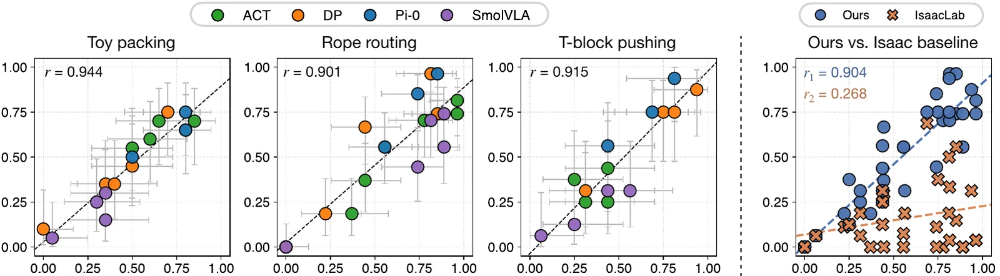
论文没有逐策略的成功率表。图 3 在 PDF 里是矢量图，我用 pdftocairo -svg 导出第 5 页，取每个圆点的中心，用各子图的网格线（0、0.25、…、1）标定。读出的值全部落在 \(k/20\)、\(k/27\)、\(k/16\) 上，偏差小于 0.001，说明读数是精确的。下表是读数，写成“真机成功次数 / 仿真成功次数”。
| 任务（每点次数） | ACT | DP | π0 | SmolVLA |
|---|---|---|---|---|
| 装玩具（20） | 10/11, 12/12, 13/14, 16/13, 17/14 | 0/2, 7/7, 8/7, 10/9, 14/15 | 10/10, 16/13, 16/15 | 1/1, 6/5, 7/3, 7/6 |
| 穿绳（27） | 10/5, 12/10, 15/15, 21/19, 26/20, 26/22 | 0/0, 0/0, 6/5, 12/18, 22/26, 23/20 | 15/15, 20/23, 23/26 | 0/0, 20/12, 22/19, 24/15, 24/20 |
| 推 T（16） | 4/6, 5/4, 7/4, 7/7 | 5/5, 12/12, 13/12, 15/14 | 7/9, 11/12, 13/15 | 1/1, 4/2, 7/5, 9/5 |
| IsaacLab 穿绳（27） | 0/0, 0/0, 0/0, 6/3, 10/0, 12/0, 12/8, 15/0, 15/2, 20/0, 20/3, 21/0, 22/1, 22/9, 23/4, 23/15, 24/0, 24/0, 26/1, 26/1 | |||
| IsaacLab 推 T（16） | 1/1, 4/2, 4/2, 5/1, 5/3, 7/2, 7/4, 7/4, 7/5, 9/3, 11/11, 12/6, 13/3, 13/8, 15/5 | |||
用这些点算 Pearson r：装玩具 0.9444，穿绳 0.9007，推 T 0.9147；IsaacLab 穿绳 0.2368，推 T 0.6494；最右一格把本文穿绳和推 T 的 35 个点合起来是 0.9040，IsaacLab 的 35 个点是 0.2683。七个数和图 3、表 I 完全一致。IsaacLab 的横坐标集合和本文完全相同，说明是同一批检查点、同一组真机成绩。
点数：装玩具 17，穿绳 20，推 T 15。数据点里重合的点（穿绳 DP 有两个 0/0）也都画了出来。
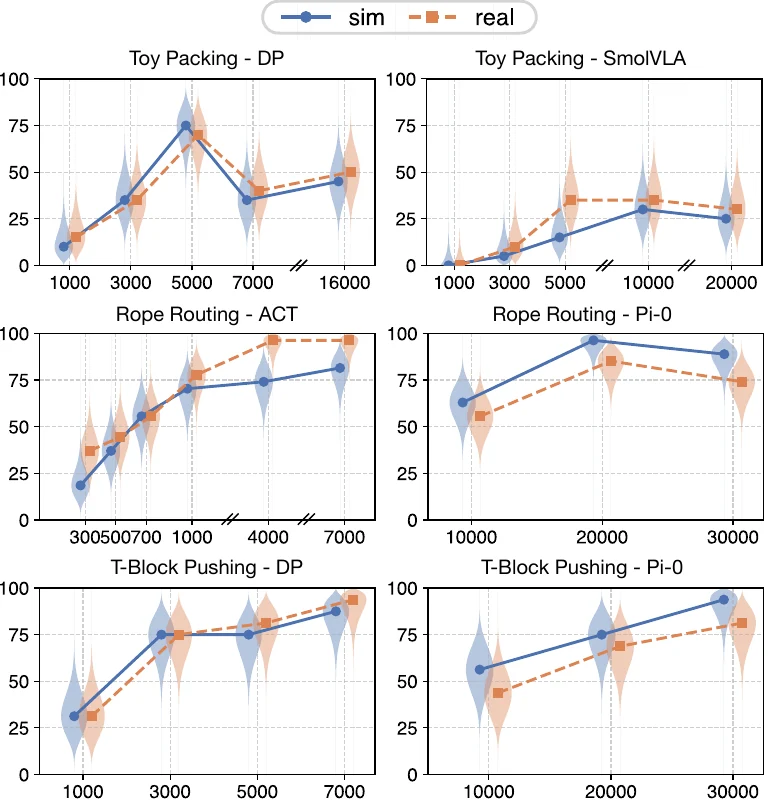
基线是 NVIDIA IsaacLab。把机器人和环境资产导入，位置和颜色都对齐到真实设置。IsaacLab 是基于 PhysX 的通用机器人仿真框架，但对软体的支持有限。绳子用关节链近似；毛绒玩具没法稳定地模拟抓取和形变，任务根本完不成，所以定量比较里去掉了这个任务。
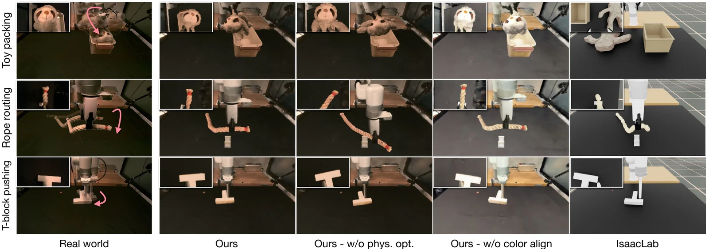
图 3 左边画出所有检查点的仿真和真机成绩。相关性很强：真机成功率高的策略，在仿真里也高，跨结构、跨任务都如此。图 3 右边和表 I 显示本文仿真器的相关性比 IsaacLab 强得多：本文三个任务的 Pearson r 都超过 0.9；基线在推 T 上只有 0.649，在穿绳上更低，0.237，原因是动力学差距更大。论文还说，IsaacLab 穿绳的 MMRV 偏低，是因为它的成功率一直很低，错排就少。
| 装玩具 MMRV↓ | r↑ | 穿绳 MMRV↓ | r↑ | 推 T MMRV↓ | r↑ | |
|---|---|---|---|---|---|---|
| IsaacLab | – | – | 0.270 | 0.237 | 0.196 | 0.649 |
| 本文 w/o 颜色对齐 | 0.200 | 0.805 | 0.343 | 0.714 | 0.354 | 0.529 |
| 本文 w/o 物理优化 | 0.241 | 0.694 | 0.248 | 0.832 | 0.100 | 0.905 |
| 本文 | 0.076 | 0.944 | 0.174 | 0.901 | 0.108 | 0.915 |
表 I · 原文第 6 页（v2）。MMRV 越低表示排序错得越少，r 越高表示线性相关越强。高亮格是原文加粗的最好结果。v1 的 MMRV 全部不同，见读者注 19。
SIMPLER 的定义（SIMPLER 页式 (1)(2)）：策略 \(i,j\) 在仿真里排反时，违规量是两者真机成绩之差 \(|R_i-R_j|\)；每个策略取最严重的一次，再平均。官方代码 SimplerEnv metrics.py 的签名是 mean_maximum_rank_violation(perf_sim, perf_real)，判断用 (perf_sim[i] > perf_sim[j]) != (perf_real[i] > perf_real[j])，加权用 perf_real 之差。
我用读者注 6 的点按这个函数算了两遍：
| 装玩具 | 穿绳 | 推 T | IsaacLab 穿绳 | IsaacLab 推 T | |
|---|---|---|---|---|---|
| 表 I（v2） | 0.076 | 0.174 | 0.108 | 0.270 | 0.196 |
| 按官方顺序 (sim, real)，即 SIMPLER 定义 | 0.0676 | 0.1537 | 0.1250 | 0.4797 | 0.2417 |
| 参数交换 (real, sim) | 0.0765 | 0.1741 | 0.1083 | 0.2704 | 0.1958 |
交换后的五个数四舍五入到三位，和表 I 一字不差；按 SIMPLER 原定义则五个都不对。交换参数等于：判断条件不变，但违规量改成两者仿真成绩之差。图 9、图 10 的六个 MMRV 也是同样情况（读者注 16）。代码仓库里没有算 MMRV 的脚本，所以这是我从数字反推的结论，没有在作者代码里直接看到。
这改变了比较的含义。SIMPLER 用真机差加权，是为了让“真机本来就很接近的两个策略排反了”只受很小的惩罚。按仿真差加权，IsaacLab 这种仿真成功率几乎全是 0 的情况，排反的代价就被压得很小。
v1 的表 I 里 IsaacLab 穿绳的 MMRV 是 0.022，全表最低，所以正文要解释一句“因为成功率一直很低，错排少”。v2 改成 0.270，比本文的 0.174 和 w/o 物理优化的 0.248 都高，只比 w/o 颜色对齐的 0.343 低，这句解释却原样保留了。
按 SIMPLER 原定义（读者注 7），IsaacLab 穿绳是 0.480，是我能复算的五格（本文三个任务、IsaacLab 两个任务）里最差的；两个消融没有散点，无法比较。原因很直观：它的仿真成功率几乎全是 0，真机成绩从 0 到 26/27 都有，大量真机差距很大的检查点在仿真里打平或排反。用仿真差加权才把这些违规压下去。
图 4 进一步给出逐策略、逐任务、随训练迭代的成绩曲线。仿真成功率大体和真机同步变化。例如装玩具-DP，仿真和真机都在 5,000 次迭代达峰，到 7,000 次明显下降；穿绳-π0 都在 20,000 次左右达峰。所以这个仿真器可以用来监视训练过程、挑选要上真机测的检查点、对真机成绩有个大致预期。
有些组合仿真和真机的成功率不重叠，比如装玩具-SmolVLA 和穿绳-ACT，但趋势仍然对，只是绝对值不同。作者归因于残留的外观和动力学差距，以及评测次数有限（每个检查点 16 到 27 次）带来的方差。
图 4 也是矢量图，我用同样方法读了每个蓝点和橙点（单位 %）。按“真机 / 仿真”写：
图 3 的点能精确复现表 I 的 r，所以表 I 用的是图 3 的数。图 4 和图 3 是哪一次评测、为什么不同，论文没说，我无法判断哪个是对的。
为了衡量渲染和动力学真实度各自的重要性，对 MMRV 和 r 做两个消融：
图 5 用同一个策略、同一初始状态比较本文、两个消融和基线。完整方法的渲染和动力学都最真，策略 rollout 和真机最接近；w/o 物理优化的物体动力学不准，w/o 颜色对齐的颜色明显偏。两种失配都会让仿真 rollout 偏离真机，但不同策略对两类差距的敏感度不同：穿绳任务里刚度设错时绳子进不了卡扣（w/o 物理优化）；推 T 任务里颜色差异改变了策略的感知，推法也跟着变（w/o 颜色对齐）。
表 I 给出定量结果。总体上完整方法的相关性最高，胜过两个消融。MMRV 低说明排序准，Pearson r 高说明相关更强、更一致，不受个别离群点影响。
推 T 的 MMRV，w/o 物理优化 0.100 比完整方法 0.108 好，原文表里也把 0.100 加粗了，但正文写“完整方法相关性最高，胜过消融”。r 上完整方法 0.915 只比 0.905 高 0.010，两者相差远小于读者注 5 说的单点不确定度。还要注意推 T 的“w/o 物理优化”改的是摩擦，不是刚度，和另外两个任务的消融不是同一种操作。
消融和 IsaacLab 只在表 I 里有汇总数，没有散点图（IsaacLab 有，在图 3 最右），所以两个消融的 MMRV 和 r 我没法复算。另外正文说 Pearson r“不受离群点影响”，这和 r 的性质相反：r 对离群点很敏感，SIMPLER 也正因此另设 MMRV。
论文提出一个评测机器人操作策略的仿真器，把高斯泼溅渲染和软体动力学的 real-to-sim 数字孪生结合起来。物理约束的重建、位置和颜色对齐、考虑形变的渲染一起缩小了外观和动力学两方面的差距。在软体和刚体任务上评测几种模仿学习策略，仿真成功率和真机强相关（r > 0.9）。分析表明仿真器能预测成绩趋势，可以用来挑检查点、估计成绩。物理优化和颜色对齐都很关键。以后可以扩大任务和策略集，推广到更多环境和更复杂的操作。
1) 机器人。xArm 7 装在桌面上，7 个自由度。末端可以换成标准的 xArm 夹爪或一个 3D 打印的推杆。两台 RealSense：D455 固定在桌上俯视工作区，D405 用 3D 打印的夹子装在腕部。为了让仿真和真机的外观一致，两台相机的白平衡和曝光都固定。
2) 数据采集。GELLO 高频发送关节角指令，机器人用关节速度控制跟随：每步算指令和实测关节角之差，目标角速度和这个差成正比；整个速度向量的 ℓ2 范数不超过上限，避免突然的大动作。评测时策略输出也用同样的控制方式，所以真机和仿真里策略输出的执行方式一致。
3) 任务定义。任务都要求策略利用物体动力学，同时依赖视觉反馈。
论文没说这个黄色遮罩是否也叠在策略的输入图像上。
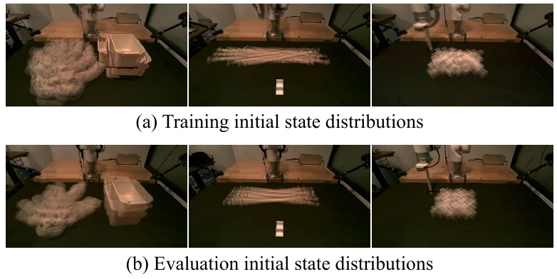
1) 资产。表 II 汇总。每个资产是一次 GS 重建加一次位姿对齐。
| 名称 | 动力学类型 | 3D 表示 |
|---|---|---|
| xArm-夹爪-桌面 | 关节 + 固定 | GS + URDF + 网格 |
| xArm-推杆-桌面 | 关节 + 固定 | GS + URDF + 网格 |
| 毛绒树懒 | 可变形 | GS + PhysTwin |
| 绳子 | 可变形 | GS + PhysTwin |
| T 形块 | 刚体 | GS + PhysTwin |
| 盒子 | 固定 | GS + 网格 |
| 卡扣 | 固定 | GS + 网格 |
表 II · 原文第 10 页。每行是一次单独的 GS 扫描，标出它在仿真里的动力学类型，以及物理模拟和渲染用的 3D 表示。三个任务都由这些资产组合而成。
2) 位置对齐。先在 SuperSplat 里手动粗对齐，让原点和 x、y、z 轴方向大致吻合。再手动框一个包围盒，把机器人的高斯和场景的高斯分开。然后对两组点云做 ICP：一组是机器人高斯的中心，一组是从 URDF 网格表面均匀采样的点。得到的刚体变换作用于整个 GS，机器人和场景就在同一坐标系里对齐了。（正文说“自动计算”，附录说明前面还有一步手动粗对齐和手动框选。）
3) 颜色对齐。机器人-场景这次扫描对渲染图像的整体色调影响最大。用带 Tukey 双权重的鲁棒 IRLS 估计颜色变换，5 张 848×480 的图。为了缓解暗桌面和亮机器人之间的不平衡，每个像素按其 RGB 范数加权，亮像素在最小二乘里权重更高。迭代 50 次。图 7 是输入图像和对齐效果。
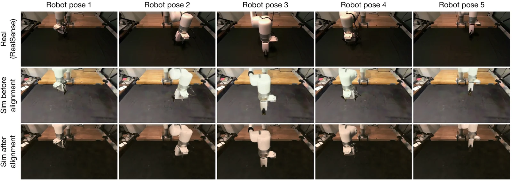
4) PhysTwin 训练。绳子和树懒的孪生用 PhysTwin 原版代码训练。PhysTwin 只需要一段多视角 RGB-D 视频就能重建几何、优化物理参数；数据用三台固定的 D455 录制，见图 8。T 形块是刚体，直接构造：在网格内部均匀采点，用连接半径 0.5、最多 50 个近邻连弹簧，所有弹簧刚度统一设为 \(3\times10^{4}\)，让它表现得像刚体。
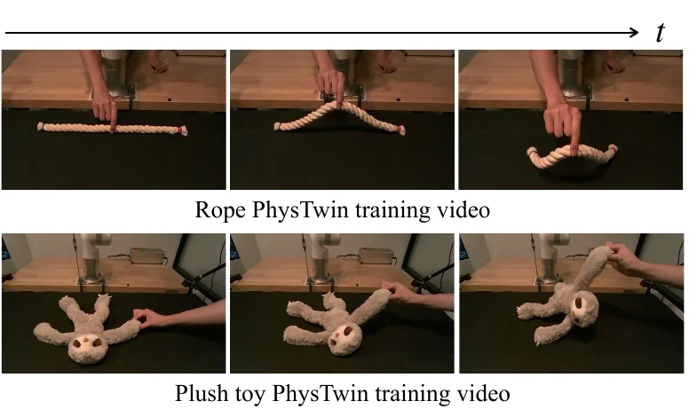
代码 experiments/utils/create_rigid_phystwin.py：表面采 1024 个点，内部用 trimesh.sample.volume_mesh 采 10000 个点，再按 5 mm 体素去重；连接半径 object_radius = 0.5、object_max_neighbours = 50（注释写着“hardcoded”），刚度 3e4，和论文一致。坐标单位是米，0.5 m 远大于 T 形块本身，所以半径不起作用，每个点就是连到最近的 50 个点。论文正文说刚体“把 Y 固定成很大的值”；3e4 正是 cfg/physics/default.yaml 里软体的初始刚度 init_spring_Y，而上限 spring_Y_max 是 1e5。所以刚性主要来自稠密连接，而不是特别大的刚度。
5) 模拟循环。算法 1 汇总了机器人动作处理、PhysTwin 模拟、碰撞处理和渲染更新。
算法 1：模拟循环（编号同原文）
输入：PhysTwin 粒子位置和速度 \(x,v\)，弹簧-质点参数 \(P\)，机器人网格 \(R\)，机器人运动 \(a\)，静态网格 \(M_{1:k}\)，地面 \(L\)，总步数 \(T\)，子步数 \(N\)，高斯 \(G\)。
PhysTwin 论文写的弹簧力是 \(k_{ij}(\lVert x_j-x_i\rVert-l_{ij})\hat d\)，和伸长量成正比。本文代码 sim/physics/spring_mass_warp.py 的 eval_springs（PhysTwin 官方代码同名函数也一样）是
即和应变成正比，刚度以对数形式存储并截断在 [0, 1e5]；相当于 \(k_{ij}=Y_{ij}/l_{ij}\)。所以文中的 \(Y\) 更像杨氏模量而不是弹簧常数，短弹簧更硬。阻尼 dashpot_damping = 100，速度每子步再乘 \(e^{-3\,\Delta t}\)，重力 −9.8，所有质点质量为 1。
默认 dt = 5e-5、fps = 30，子步数按 round(1/fps/dt) 算是 667，也就是每个 30 Hz 控制步内跑 667 次算法 1 的内层循环（检查点可以覆盖 dt，我没下载检查点核对）。代码的子步顺序和算法 1 一致：弹簧力、速度更新、自碰撞（object_collision）、网格碰撞、地面碰撞。不同的是夹爪手指和静态网格（盒子、卡扣）合在同一个 Warp 网格里，由一个 mesh_collision 核一起处理，没有算法 1 那样分开的循环。
1) 数据集。图 6 可视化了训练和评测初始状态的覆盖范围。
2) 归一化。输入输出的归一化沿用各算法原始实现的约定（表 III）。mean–std 把特征标准化成零均值单位方差；min–max 把每一维独立缩放到 [−1, 1]。VLA 策略（SmolVLA 和 π0）用相对动作，让策略更有纠错性、更稳：每个动作是末端位姿在基座系下的一个 SE(3) 变换。参考 [12]，归一化统计量（mean–std 或 min–max）在整个数据集上按动作块长度的滑动窗口计算，块里每个位置的动作用自己那个位置的统计量归一化，以免块中靠后的动作幅度越来越大。
| 模型 | 视觉 | 状态 | 动作 | 相对动作？ |
|---|---|---|---|---|
| ACT | mean–std | mean–std | mean–std | 否 |
| DP | mean–std | min–max | min–max | 否 |
| SmolVLA | identity | mean–std | mean–std | 是 |
| π0 | mean–std | mean–std | mean–std | 是 |
表 III · 原文第 12 页。各模型对视觉、状态、动作三种模态用的归一化，以及是否在相对动作空间里工作。
3) 图像增强。训练时对每张图随机抽三种增强组合使用，类型和范围见表 IV。
| 颜色变换 | 范围 | 空间变换 | 范围 |
|---|---|---|---|
| 亮度 | (0.8, 1.2) | 透视 | 0.025 |
| 对比度 | (0.8, 1.2) | 旋转 | [−5°, 5°] |
| 饱和度 | (0.5, 1.5) | 裁剪 | [10, 40] px |
| 色相 | (−0.05, 0.05) | ||
| 锐度 | (0.5, 1.5) |
表 IV · 原文第 12 页。颜色变换的数字是乘性或加性抖动系数；空间变换的数字是透视畸变、旋转和裁剪的幅度。
4) 超参数。表 V、表 VI。VLA 策略只微调动作头，预训练的视觉-语言编码器冻结。
| 模型 | 视觉分辨率 | 状态维度 | 动作维度 | Tp | Te |
|---|---|---|---|---|---|
| ACT | L: 120×212；H: 240×240 | 8 | 8 | 50 | 50 |
| DP | L: 120×212；H: 240×240 | 8 | 8 | 64 | 50 |
| SmolVLA | L: 120×212；H: 240×240 | 8 | 8 | 50 | 50 |
| π0 | L: 120×212；H: 240×240 | 8 | 8 | 50 | 50 |
表 V · 原文第 12 页。穿绳任务用低分辨率 L，其他任务用高分辨率 H。状态和动作向量包含末端位置、四元数和夹爪状态，绝对或相对坐标。Tp、Te 是预测和执行的步数。
正文 §IV-A 说推 T 的末端状态只有 \((x,y)\)。策略训练子模块的配置 configs/training/act_pusht.json、dp_pusht.json、svla_pusht.json 里，observation.state 和 action 的 shape 都是 [2]；另外两个任务是 [8]（位置 3 + 四元数 4 + 夹爪 1 = 8）。表 V 对所有任务都写 8，没有单列推 T。
分辨率：120×212 正好是 480×848 的四分之一，保持长宽比；240×240 是正方形，配置里是 Resize([240, 240])，会把 848×480 的画面横向压扁。训练时还有 RandomCrop（240 输入裁到 200×200，120×212 输入裁到 110×202），表 IV 的“裁剪 [10, 40] px”大约对应这个。
| 视觉骨干 | #V-Params | #P-Params | LR | Batch | #Iters |
|---|---|---|---|---|---|
| ResNet-18（ACT） | 18M | 34M | 1×10⁻⁵ | 512 | 7k |
| ResNet-18（DP） | 18M | 245M | 1×10⁻⁴ | 512 | 7k |
| SmolVLM-2 | 350M | 100M | 1×10⁻⁴ | 128 | 20k |
| PaliGemma（π0） | 260B | 300M | 5×10⁻⁵ | 8 | 30k |
表 VI · 原文第 12 页。#V-Params、#P-Params 是视觉编码器和策略头的参数量。“260B”照录原文，见读者注 14。
steps: 20000，穿绳是 5000，都不是 7000。图 4 里装玩具-DP 的检查点一直到 16000，穿绳-ACT 到 7000，也超出了 5000 的配置。可能表 VI 写的是“选用的”迭代数，配置文件后来改过，论文没说明。1) 评测协议。评测时采样一组固定初始状态，分别在仿真和真机上滚动策略。先在仿真里采样物体初始状态，从和真机相同的相机视角渲染，存下初始帧；真机上的实时可视化工具把这些仿真状态叠在相机画面上，人照着手动摆放物体。
2) 回合设置。正文所有评测实验的回合数和基于网格的物体初始配置范围（相对于预设位姿）见表 VII。
| 任务（随机化对象） | 回合 | x (cm) | y (cm) | θ (°) |
|---|---|---|---|---|
| 装玩具（玩具） | 20 | [−5, 5] | [−5, 3] | [−5, 5] |
| 装玩具（盒子） | 20 | [−5, 5] | [0, 5] | [−5, 5] |
| 穿绳（绳子） | 27 | [−5, 5] | [−5, 5] | [−10, 10] |
| 推 T（T 形块） | 16 | [−5, 5] | [−5, 5] | {±45, ±135} |
表 VII · 原文第 13 页。每个任务被随机化的物体：装玩具是玩具和盒子，穿绳是绳子，推 T 是 T 形块。格点数见读者注 4。
3) 成功判据。真机靠操作员记录成败，繁琐且有人为偏差。仿真要扩大规模就得自动判定。三个任务都用仿真状态设计指标：
三个脚本在 experiments/utils/calculate_success_*.py，和论文一致，补充几个论文没写的细节：
>= 3050，即 98.5% 的质点在盒内；帧号 ≥ 350（总 450 帧 = 15 s × 30 fps）；计数 >= 30 帧，不是严格“多于 30”。>= 100；帧号 ≥ 800（总 900）。((x - x_target)**2).sum(1).mean() < 0.002，单位 m²，相当于均方根距离 \(\sqrt{0.002}\approx4.5\) cm；帧号 ≥ 1700（总 1800 = 60 s）。正文里每个策略在仿真中用和真机完全相同的初始状态评测，控制了随机性，但次数有限，Clopper–Pearson 区间很宽。均匀采样会改变分布，所以随机化范围相对网格实验略有调整：装玩具不变；穿绳的 x、y 放大到 [−7.5, 7.5] cm，θ 到 [−15°, 15°]；推 T 的 x、y 放大到 [−7.5, 7.5] cm。然后在任务分布里随机采 200 个初始状态，看仿真和真机相关性的渐近值。图 9 是结果。
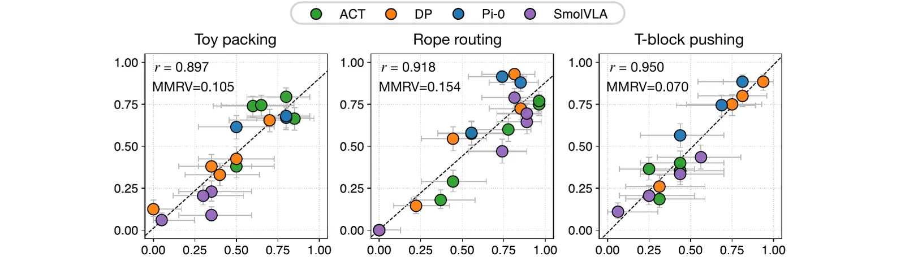
置信区间显著收窄，相关性估计随着仿真次数增加而稳定，最低的相关系数是 0.897。作者认为对多样的任务实例取平均后，仿真保真度是真机成绩的可靠预测。和正文相比，检查点的相对排序保持一致。
两张图也是矢量图，读法同读者注 6。图 9 的仿真值都是 0.005 的倍数（200 次），真机值和图 3 完全相同。图 10 每个点的两个坐标都是同一组回合数的整数倍。
| r（论文） | r（重算） | MMRV（论文） | 交换参数 | SIMPLER 定义 | |
|---|---|---|---|---|---|
| 图 9 装玩具 | 0.897 | 0.8970 | 0.105 | 0.1050 | 0.1353 |
| 图 9 穿绳 | 0.918 | 0.9181 | 0.154 | 0.1535 | 0.1241 |
| 图 9 推 T | 0.950 | 0.9501 | 0.070 | 0.0697 | 0.0750 |
| 图 10 装玩具 | 0.880 | 0.8804 | 0.127 | 0.1267 | 0.1700 |
| 图 10 穿绳 | 0.887 | 0.8867 | 0.123 | 0.1235 | 0.1309 |
| 图 10 推 T | 0.944 | 0.9442 | 0.047 | 0.0469 | 0.0521 |
12 个数里，r 全部一致，MMRV 全部和交换参数的版本一致。和正文的 0.944、0.901、0.915 比，扩大到 200 次后装玩具的 r 反而降到 0.897，穿绳和推 T 升高。
为了进一步检验仿真和真机的对应关系，做回放实验：把真机推理时的控制指令原样在仿真里重放。这样把动力学差距和外观差距分开，因为感知图像不同导致的策略行为差异被排除了。一共回放：装玩具 16 个检查点各 20 回合，穿绳 15 个各 27 回合，推 T 12 个各 16 回合。仿真里的物体初始状态和对应的真机回合相同。
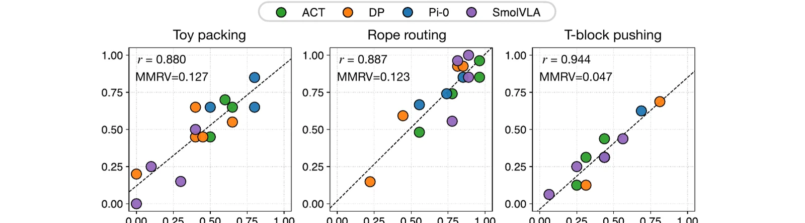
| 装玩具 GT+ | GT− | 穿绳 GT+ | GT− | 推 T GT+ | GT− | |
|---|---|---|---|---|---|---|
| 回放 + | 106 | 37 | 276 | 28 | 63 | 1 |
| 回放 − | 25 | 132 | 24 | 77 | 17 | 111 |
表 VIII · 原文第 14 页。逐回合的回放结果和真机真值的 2×2 混淆矩阵（TP、FP、FN、TN），行是回放结果，列是真值，数字是所有检查点合计的回合数。
图 10 是相关性，表 VIII 是逐回合统计。三个任务的混淆矩阵都是对角线占优，回放和真机结果高度一致。装玩具的假阳性（回放成功、真机失败）多于假阴性，说明仿真略微高估成功，可能是接触或摩擦模型简化了。推 T 则假阴性多于假阳性，有些真机成功的轨迹在仿真里复现不了，可能是摩擦系数和初始状态有轻微失配。总体上即使是纯开环的轨迹回放，仿真大多数时候也能复现真机结果。
表 VIII 每个任务四格之和：装玩具 106 + 37 + 25 + 132 = 300，穿绳 405，推 T 192。按正文的检查点数应是 16 × 20 = 320、15 × 27 = 405、12 × 16 = 192。只有装玩具对不上，而 300 = 15 × 20。图 10 装玩具也正好有 15 个点。
表和图互相印证：图 10 读出的真机成功回合合计，装玩具 131 = 106 + 25，穿绳 300 = 276 + 24，推 T 80 = 63 + 17；回放成功合计 143 = 106 + 37、304 = 276 + 28、64 = 63 + 1。六个和全部吻合。逐回合一致率是 (106 + 132)/300 = 79.3%，(276 + 77)/405 = 87.2%，(63 + 111)/192 = 90.6%。推 T 回放的总成功率 64/192 = 33% 比真机 80/192 = 42% 低 9 个点，和图 10 的点大多在对角线下方一致。
回放用的是真机 rollout，所以图 10 的横坐标应该是图 3 横坐标的子集。推 T 是（12 个点全在图 3 里）；穿绳 15 个点里有 14 个在，SmolVLA 有一个 21/27 在图 3 里是 20/27；装玩具差得多：图 10 的 DP 真机成绩是 0、8、8、9、13（/20），图 3 是 0、7、8、10、14；SmolVLA 图 10 是 0、2、6、8，图 3 是 1、6、7、7。结合读者注 9，装玩具在图 3、图 4、图 10 里有三套不完全相同的真机成绩。论文没解释，可能回放只用了有完整记录的回合，或者真机评测做过不止一轮。未核实。
图 11 比较同步时刻的仿真和真机轨迹，每个任务都给出正面和腕部两个视角。物体位姿、接触的切换、末端运动在对应时刻都保持一致，仿真既抓住了任务动力学，也还原了外观。
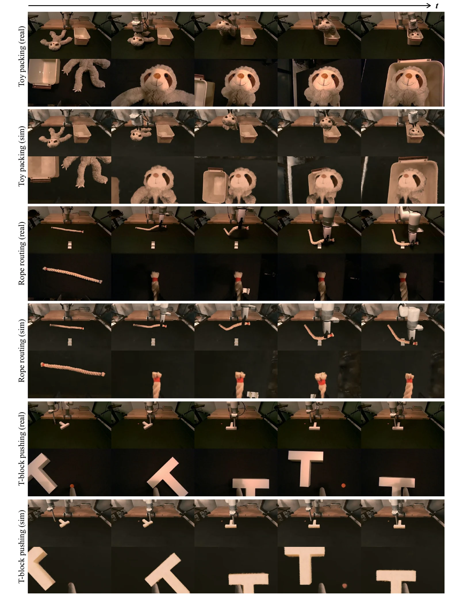
读这篇时问过的两个基础问题，答案整理在这里。数字都是页面当场算的。
做法是同一批策略（或同一策略的多个检查点）在仿真和真机上各跑若干次，每个策略得到一对成功率：仿真 \(s_i\)、真机 \(r_i\)。两个指标用不同方式比较这 \(N\) 对数。
Pearson r：两组数是不是一起涨一起落。
分子看每个策略在仿真和真机里是不是同时高于平均或同时低于平均，同向加分、反向减分；分母做归一化，所以 \(r\in[-1,1]\)。\(r=1\) 表示所有点落在一条斜向上的直线上。它衡量的是线性关系，只关心点排得直不直。
MMRV（平均最大排名违规，SIMPLER 提出）：排序错了多少、错得多严重。
动手算 · 真机成功率固定，拖滑块改仿真成功率
| 情况 | 仿真成功率（真机固定为 0.2, 0.5, 0.6, 0.9） | MMRV | r | 说明 |
|---|---|---|---|---|
| D 完全一致 | 0.2, 0.5, 0.6, 0.9 | 0 | 1.000 | 理想情况 |
| A 小换位 | 0.3, 0.6, 0.5, 0.8 | 0.050 | 0.943 | 第 2、3 个排反，真机只差 0.1，罚得轻：(0 + 0.1 + 0.1 + 0) / 4 |
| B 大换位 | 0.3, 0.5, 0.6, 0.45 | 0.275 | 0.531 | 真机最好的策略在仿真里排到倒数第二，重罚：(0 + 0.4 + 0.3 + 0.4) / 4 |
| C 整体偏低一半 | 0.1, 0.25, 0.3, 0.45 | 0 | 1.000 | 两个指标都满分，但仿真的绝对值全错了 |
两个指标各管什么。MMRV 管“挑策略挑得对不对”：不在乎数值，只在乎排序，排错时按真机差距加权。\(r\) 管“趋势对不对”：对单个离群点很敏感（B 里一个点就把 \(r\) 从 0.94 拉到 0.53），对整体平移、缩放完全不敏感（C）。两者都看不出绝对值偏差：情况 C 仿真说 45%，真机其实 90%。要预测真机的绝对成功率，还得看平均绝对误差，或者直接看散点图离对角线多远。
本文的问题出在加权这一步。SIMPLER 官方函数是 mean_maximum_rank_violation(perf_sim, perf_real)，按真机差距加权。本文报告的 MMRV 要把两个参数对调（按仿真差距加权）才算得出来（读者注 7）。上面例子 A 里两种加权恰好相等，看不出区别；换到例子 B 或者拖几下滑块就能看到差别。在本文真实数据上，IsaacLab 绳子那格按原定义是 0.480，论文写 0.270 并据此说它“低”（读者注 8）。
判断实验效果时还要看：
ICP 是 Iterative Closest Point（迭代最近点，Besl & McKay 1992），把两份点云对齐到同一坐标系的经典算法。本文用它把 iPhone 扫描出的机器人高斯（源点云，坐标系是随手定的）对齐到 URDF 表面采样的点（目标点云，每个连杆 2000 点，在机器人基座系里）。要找一个刚体变换，即旋转 \(R\) 加平移 \(t\)：
难点是不知道哪个点对哪个点。如果配对已知，这个问题一步就有解析解；ICP 的办法是“先猜配对，解出变换，挪过去再重新配对”，反复进行。每一轮两步：
每轮误差都不会变大（配对只会让距离变小，解变换又是当前配对下的最优），所以 ICP 一定收敛，但只保证收敛到某个局部最优。
动手跑 · 二维 ICP（灰色是目标“机械臂”，蓝色是源点云，细线是本轮配对）
软肋：初始位置偏太多就会卡住。配对靠“离得最近”，错位太大时最近点几乎全配错，算法会稳稳收敛到错误姿态（比如把机械臂头尾对反）。上面的演示里，转 25° 和 70° 都能对上（剩下的 0.026 是点本身的噪声），转 150° 就卡在平均距离 0.51 的错误姿态；我扫过，在这个形状上从 110° 左右开始卡住。所以实际都先粗配准，再交给 ICP 精修：本文代码先用 RANSAC 做全局粗配准（随机抽几组点，靠局部几何特征匹配，挑最好的大致位置），再跑 ICP（代码 60 + 40 轮）；附录还说先在 SuperSplat 里手动粗对齐。
对齐之后：每个机器人高斯在 URDF 点云里找最近点，继承那个点的连杆编号。仿真里每个连杆怎么动，属于它的高斯就跟着做同样的刚体变换，扫描出的“静态机器人”就能动起来（III-C，动画第 3 幕）。
常见变体：点到面 ICP（用点到对应点切平面的距离，平整表面上收敛快得多）；剔除离群配对（太远的配对丢掉，防止扫描噪声带偏）；带尺度的版本（单位不一致时多求一个缩放因子，Horn 的方法也能解）。
下表把论文里的设置和代码对应起来（kywind/real2sim-eval 提交 8bd7091，策略子模块 32abb1a）。只读，没有运行，也没有下载资产和检查点。
| 论文 | 代码位置 | 说明 |
|---|---|---|
| Gym 接口 | sim/envs/env.py | BaseEnv(gymnasium.Env)，reset / step / get_obs |
| 机器人 ICP + RANSAC | assets/scans/construct_scene_gripper.py、sim/utils/gs/icp_utils.py | 8 个连杆（link1–7 + 夹爪基座）各采 2000 点；RANSAC 全局配准后两段 ICP（60 + 40 次迭代） |
| 颜色对齐 | assets/scans/color_alignment.py | 3×6 矩阵 + 偏置，Tukey IRLS，50 次（读者注 1） |
| 物理参数 | cfg/physics/default.yaml | fps 30，dt 5e-5，init_spring_Y 3e4，spring_Y_max 1e5，collision_dist 0.005，grasp_force_threshold 3e4，末端摩擦 1.0、弹性 0 |
| 弹簧-质点 | sim/physics/spring_mass_warp.py | Warp 核函数 eval_springs、object_collision、mesh_collision、integrate_ground_collision（读者注 12） |
| 夹爪力阈值 | sim/physics/phystwin.py 的 step | 两指各自超过阈值才锁住（读者注 2） |
| LBS | sim/utils/gs/transform_utils.py 的 interpolate_motions | 8 邻居求节点旋转，16 近邻倒距离加权，不转高斯朝向（读者注 3） |
| 刚体 T 形块 | experiments/utils/create_rigid_phystwin.py | 半径 0.5、50 近邻、刚度 3e4（读者注 11） |
| 评测网格 | cfg/gs/{sloth,rope,T}.yaml | 20 / 27 / 16 个格点（读者注 4） |
| 成功判据 | experiments/utils/calculate_success_*.py | 读者注 15 |
| 多 GPU 评测 | experiments/eval_policy_parallel.py | 论文说的多 GPU 并行 |
| 策略训练 | 子模块 configs/training/*.json | LeRobot 配置；推 T 的状态和动作是 2 维（读者注 13）；π0 用 openpi，推理在 inference/policy_openpi.py |
| MMRV / r | 无 | 仓库里没有计算相关性指标的脚本（读者注 7） |
我下载了 v1（2025-11-06）和 v2（2025-11-10）两个 PDF，去掉参考文献编号后逐句比较：
| MMRV | 装玩具 v1 → v2 | 穿绳 v1 → v2 | 推 T v1 → v2 |
|---|---|---|---|
| IsaacLab | – → – | 0.022 → 0.270 | 0.031 → 0.196 |
| w/o 颜色对齐 | 0.200 → 0.200 | 0.156 → 0.343 | 0.031 → 0.354 |
| w/o 物理优化 | 0.200 → 0.241 | 0.119 → 0.248 | 0.031 → 0.100 |
| 本文 | 0.087 → 0.076 | 0.096 → 0.174 | 0.000 → 0.108 |
| 图 9 | 0.092 → 0.105 | 0.077 → 0.154 | 0.000 → 0.070 |
| 图 10 | 0.050 → 0.127 | 0.093 → 0.123 | 0.000 → 0.047 |
v1 的数我用 SIMPLER 原定义、交换参数、只算严格排反、按策略均值算等几种写法都没能从图中的点复现；v1 推 T 的 0.000 尤其不可能，因为图 3 推 T 里 ACT 的 (4/16, 6/16) 和 (5/16, 4/16) 就是一对明显的排反。v2 的数则能用交换参数的版本精确复现（读者注 7）。所以 v2 应该是修了一个算法错误，但修成了和 SIMPLER 不同的定义。v2 的变动说明里没有提到这一点。
§IV-C 原文写“Pearson coefficient r > 0.9 for all policies”。表 I 的 r 是每个任务把 4 种策略的全部检查点放在一起算的。如果按策略单独算（用读者注 6 的点），装玩具 ACT 0.772、DP 0.968、π0 0.918、SmolVLA 0.798；穿绳 0.948、0.955、0.994、0.945；推 T ACT 只有 0.037（4 个检查点，真机 4–7/16 挤在一起），DP 0.995、π0 0.982、SmolVLA 0.959。也就是说，同一种策略不同检查点之间的细分，仿真不总是排得对；大的相关性主要来自不同策略、不同训练阶段之间的大差距。
平均偏差：仿真成功率比真机平均低 3.8（装玩具）、5.7（穿绳）、2.9（推 T）个百分点，平均绝对差 6.8、11.7、8.7 个百分点。仿真整体略偏悲观。
以下各条都是本页加的核算或对照，不属于论文内容。点编号跳到对应位置。
论文没写、我也没找到的：评测速度的具体倍数和 GPU 型号；IsaacLab 基线里绳子关节链的参数；“w/o 颜色对齐”和“w/o 物理优化”的逐检查点数据；推 T 目标遮罩是否进入策略输入；Beta 后验小提琴图的具体用法。
文中提到的工具、基准和方法。链接在 2026 年 11 月 10 日用脚本核对，都返回 200。
| 名称 | 是什么 | 主页 | 论文 |
|---|---|---|---|
| Real-to-Sim Eval | 本文 | 代码、资产和检查点 | 2511.04665 |
| PhysTwin | 弹簧-质点数字孪生，本文的动力学 | 代码（MIT） | 2503.17973 |
| SIMPLER | 仿真评测真机策略，MMRV 的出处；站内精读 | SimplerEnv | 2405.05941 |
| IsaacLab | 基线仿真器（PhysX） | isaac-sim.github.io/IsaacLab | – |
| 3D Gaussian Splatting | 渲染表示 | repo-sam.inria.fr | 2308.04079 |
| Scaniverse | iPhone 扫描生成 GS | scaniverse.com | – |
| SuperSplat | GS 查看和分割工具 | github.com/playcanvas/supersplat | – |
| NVIDIA Warp | GPU 仿真框架，物理引擎底层 | github.com/NVIDIA/warp | – |
| GELLO | 遥操作采示范 | wuphilipp.github.io/gello_site | 2309.13037 |
| LeRobot | ACT、DP、SmolVLA 的训练实现 | github.com/huggingface/lerobot | – |
| ACT | 被评测策略 | tonyzhaozh.github.io/aloha | 2304.13705 |
| Diffusion Policy | 被评测策略 | diffusion-policy.cs.columbia.edu | 2303.04137 |
| π0 | 被评测策略（openpi 实现） | openpi | 2410.24164 |
| SmolVLA | 被评测策略 | huggingface.co/blog/smolvla | 2506.01844 |
| RobotArena ∞ | 相关工作，绿幕式 real-to-sim 基准 | – | 2510.23571 |
| Ctrl-World | 相关工作，视频世界模型评测 | – | 2510.10125 |
| Real-is-sim | 相关工作，刚体数字孪生 | – | 2504.03597 |
| GSWorld | 相关工作，GS 闭环仿真 | – | 2510.20813 |
| Kress-Gazit 等 | 策略评测的实践建议，固定初始状态的出处 | – | 2409.09491 |
| LBM 评测 [12] | 评测次数与不确定度、按块位置归一化的出处 | – | 2507.05331 |